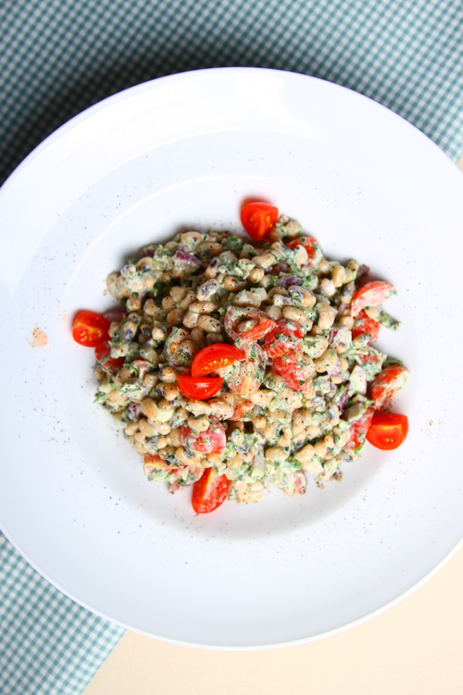
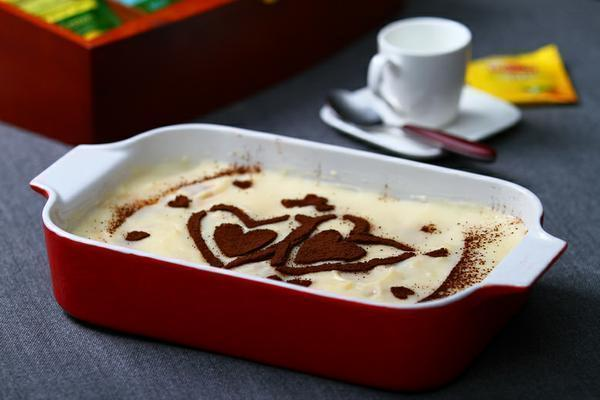
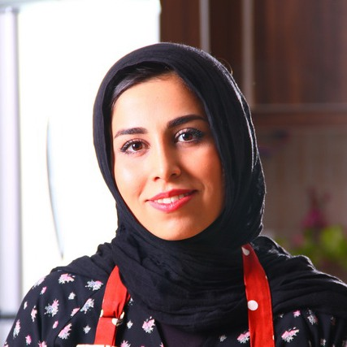
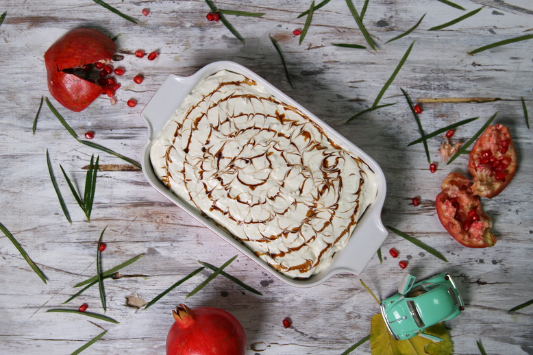

جدید ترین غذا ها

سالاد لوبیا چشم بلبلی
این سالاد یک غذای کامل است و میتوان آن را با نان به عنوان غذای اصلی میل نمود.
۱۰۰۵۵
۱۰۸

کسری حیدری

دسر پان اسپانیا
گرچه میتوان برای آماده کردن پان اسپانیا از دسر های صنعتی و موجود در بازار استفاده کرد و ...
۱۷۶۳۷
۲۶۷

ساناز محمدی

تیرامیسو انار
بنابر سلیقه و ذائقه خود میتوانید طعم این دسر را شیرین و یا ترش تعیین کنید.
۲۰۱۹۷
۱۷۳
محبوب سادات

خوشه انار
طراحی خوشه انار میتواند یک ایده باشد،شما بر طبق نیاز خود میتوانید طرحهای زیباتری را برا ...
۹۰۹۴
۷۲
کسری حیدری